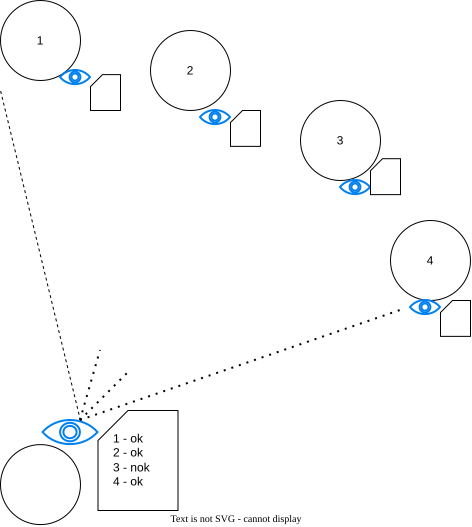

Detectores não Confiáveis de Falhas
Em sistemas distribuídos é necessário perceber quando problemas acontecem para que se possa lidar com estes problemas. Por exemplo, se um componente não está funcional, pode ser necessário fazer alguma manutenção, indo de uma simples reinicialização a uma troca de um disco ou uma fonte, a uma aposentadoria do componente e substituição por um novo. Chandra e Toueg1 introduziram o conceito de Detectores de Falhas como forma de encapsular a percepção do estado funcional dos outros processos. Assim, um detector de falhas pode ser visto como um oráculo distribuído, com módulos acoplados aos processos do sistema e que trabalha monitorando os outros processos.

Chandra e Toueg classificaram os detectores de falhas segundo suas características de completude (completeness) e acurácia (accuracy), ou seja, a capacidade de suspeitar de um processo defeituoso e a capacidade de não suspeitar de um processo correto, respectivamente. Embora não seja obrigatório, detectores de falhas são normalmente implementados por meio de trocas de mensagens de heartbeat. Mensagens são esperadas em momentos específicos para sugerir que o remetente continua funcional.

Quando os heartbeats não chegam até o limite de tempo, o processo remetente passa a ser considerado suspeito de falha.
Heartbeats que chegam depois podem corrigir erros, mas também podem levar a atrasos na detecção de falhas.
Para capturar estas combinações de eventos, foram definidos os seguintes níveis para as propriedades de completude e acurácia, onde um processo é denominado correto se ele não falha durante execução do protocolo.
- Completude Forte - A partir de algum instante, todo processo falho é suspeito permanentemente por todos os processos corretos.
- Completude Fraca - A partir de algum instante, todo processo falho é suspeito permanentemente por algum processo correto.
- Precisão Forte - Todos os processos são suspeitos somente após terem falhado.
- Precisão Fraca - Algum processo correto nunca é suspeito de ter falhado.
- Precisão Eventual Forte - A partir de algum instante, todos os processos são suspeitos somente após falharem.
- Precisão Eventual Fraca - A partir de algum instante futuro, algum processo correto nunca é suspeito.
Um detector ideal seria um com Completude Forte e Precisão Forte, pois detectaria somente processos defeituosos e todos os processos defeituosos. Este detector é conhecido como \(P\) ou Perfeito.
Infelizmente os detectores perfeitos só podem ser implementados em sistemas síncronos, onde se pode confiar que a ausência de uma mensagem implica em que a mensagem não será entregue porque o remetente deve ter falhado. Assim, é preciso se focar em detectores não perfeitos ou não confiáveis.
Em ambientes parcialmente síncronos, ou seja, assíncronos aumentados com algum tipo de sincronia, já é possível implementar detectores não confiáveis. Por exemplo, se os processos dispõem de temporizadores precisos, um detector pode contar a passagem do tempo nos intervalos de comunicação com outros processos e, considerando um limite de tempo para estes intervalos, tentar determinar se tais processos encontram-se defeituosos ou não, como nas figuras apresentadas acima. Esta determinação é por certo imprecisa e os detectores podem voltar atrás em suas suspeitas tão logo percebam um erro. Entretanto, a despeito desta incerteza, a informação provida por estes detectores já pode ser suficiente para que se resolva diversos problemas em computação distribuída. Chandra, Hadzilacos e Toueg demonstram que o detector mais fraco com o qual se pode resolver o problema do consenso distribuído, que veremos a seguir, tem as propriedades de Completude Fraca e Precisão Eventual Fraca, e é conhecido como \(\Diamond W\), ou Eventual Weak. 2
Uma característica interessante mas não muito intuitiva do \(\Diamond W\) é sua equivalência ao detector \(\Diamond S\), que tem Completude Forte e Precisão Eventual Fraca. Isso é alcançado simplesmente propagando as suspeitas de um processo para o outro, fazendo com que a suspeita de um leve à suspeita por todos, em algum momento.
Outra equivalência interessante é a de \(\Diamond W\), e portanto de \(\Diamond S\), com o eleitor de líderes \(\Omega\). Este oráculo permite que os processos elejam, de forma não confiável, um dentre o conjunto de processos como seu líder. A redução é simples: dado que \(\Diamond S\) garante que a partir de algum momento um processo nunca será suspeito, basta utilizar o \(\Diamond S\) para recuperar a lista de processos não suspeitos atualmente e, destes, escolher um; se \(\Diamond S\) corrigir a informação e passar a suspeitar do processo, escolha outro, em um rodízio. Em algum momento \(\Diamond S\) deixará de suspeitar de algum processo correto e em algum momento posterior este processo será escolhido pelo rodízio e será a partir de então permanentemente o líder.
Mas como se implementa este detector \(\Diamond W\)? Ele é implementável em sistemas nos quais há um limite superior de tempo para a transmissão de mensagens, mesmo que este limite seja desconhecido. Neste cenário, o detector pode ser feito usando-se o esquema de pings apresentado acima e esperando-se por um tempo \(t\) qualquer desde o envio do ping e até a resposta do pong. Se o detector em algum momento percebe que suspeitou indevidamente de outro processo, então dobra o tempo \(t\). Assim, em algum momento \(t\) será maior que o limite superior para a transmissão de mensagens e o detector não mais incorrerá em erros.
Os vários protocolos que utilizam o detector equivalente \(\Diamond S\)/\(\Diamond W\) ou o eleitor de líderes \(\Omega\) são escritos de forma que o progresso só é garantido quando o detector para de cometer enganos. Como não dá para saber quando isso acontece, os protocolos só garantem que, em algum momento, farão progresso, sem indicar quando. Se o limite superior não existir, o protocolo não pode garantir que termina, mas como estava preparado para enganos, pelo menos garantem que um resultado errado nunca é alcançado, ou seja, os protocolos sempre garantem que as propriedades de corretude não são violadas, mesmo que não garanta que a terminação será alcançada. Na prática, os sistemas assíncronos passam por períodos síncronos que permitem que os protocolos progridam e terminem... mas sem garantias.
Figura
figura 2.2 da dissertação.